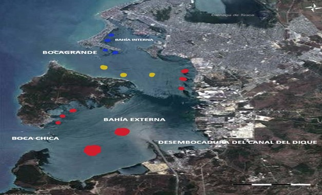

Los científicos del Laboratorio Marino de Plymouth han desarrollado una IA capaz de reconocer trozos de plásticos en el mar, apoyados por las imágenes que les brindan los satélites Sentinel-2 de la Agencia Espacial Europea. Este software es capaz de revelar las zonas o áreas con presencia de desechos plásticos en el mar. Esto se logra a través del reflejo de la luz sobre los objetos plásticos.
El drone se encuentra en las coordenadas: 10°17'57.9"N 75°33'19.4"W
La carga actual del drone es de 56%
El drone lleva en uso 2 hrs., 37 min., 49 seg.,
El drone se encuentra en las coordenadas: 10°19'39.7"N 75°33'37.2"W
La carga actual del drone es de 54%
El drone lleva en uso 2 hrs., 37 min., 49 seg.,
Los puntos rojos
Son zonas consideradas con alto porcentaje de contaminación.
Los puntos amarillos
Son zonas consideradas con un porcentaje medio de contaminación.
Los puntos azules
Son zonas consideradas con un porcentaje bajo de contaminación.
Cuenta con una bahía de más de 82 km2 lo que permite contar con uno de los puertos más seguros para el movimiento de carga y pasajeros en la región Caribe; la Bahía se encuentra separada del mar por la isla Tierra Bomba, y cuenta con dos entradas principales con las cuales se comunica con el mar abierto: Bocagrande y Bocachica; una tercera entrada ubicada al norte de la ciudad en el corregimiento de La Boquilla, hace parte de un sistema de bajamar muy afectado por la invasión y el relleno del manglar.